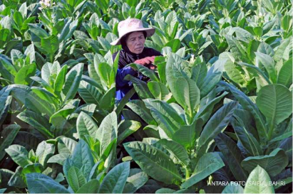

Dunia Tembakau
informasi menarik seputar tembakau bisa kamu dapatkan pada web ini
informasi menarik seputar tembakau bisa kamu dapatkan pada web ini
Temukan Berita dan Tips Menarik Setiap Harinya .Gratis!!
Della Aprilia, Jurnalis · Senin 23 Mei 2019 15:24 WIB
Tembakau merupakan tanaman musiman yang bersifat selalu mengalah dengan tanaman lain. Hidupnya hanya memerlukan segenggam tanah, untuk melebarkan akar-akarnya. Ia tidak akan tumbuh baik, dan berkualitas jika ada tanaman lain disampingnya, dan ia harus terkena sinar matahari. Tidak memerlukan banyak air, jika kebanyakan air justru akan membusuk dan mati. Kualitas tembakau baik, jika cuacanya pas dan sesuai kebutuhan tembakau. Intensitas turun hujan tidak terlalu banyak, masih ada panas sinar matahari, atau tidak dalam bulan kemarau panjang, masih ada turun hujan berkala. Jadi petani harus mempunyai kepekaan, pengetahuan dan pengalaman tentang prakiraan cuaca/musim.
Tembakau di tiap daerah punya khas tersendiri, ditentukan oleh jenis bibit, lokasi atau lahan tanaman, waktu tanam, dan pengolahan pascapanen. Akibatnya, di setiap daerah menghasilkan jenis tembakau berbeda-beda sesuai lokasi tanam. Ada tembakau kering-angin (air-cured), kering-asap (fire-cured), kering-panas (flue-cured), dan kering-jemur (sun-cured). Pemanfaatan tembakau juga bermacam-macam. Contoh, tembakau dari Deli untuk wrapper cerutu, tembakau srintil temanggung untuk sigaret kretek rajangan, tembakau virginia-vorstenlanden dari daerah Klaten, Sukoharjo, dan Lombok untuk sigaret kretek mild dan lain sebagainya.
Pabrikan dalam pembelian tembakau disesuaikan dengan permintaan pasar yang ramai. Saat ini, permintaan pasar ramai mild, tentunya pembelian tembakau terbesesar jenis virginia, baru tembakau jenis lainnya. Jika pasokan virginia di Indonesia kurang, tentunya harus mendatangkan tembakau dari negara lain. Jadi, kuota/tonase pembelian tembakau oleh pabrikan rokok sangat ditentukan permintaan pasar, dan disesuaikan tembakau khas dari daerah masing-masing.
Memang selama ini, belum ada trik atau strategi jitu, bagaimana agar tembakau terserap semua oleh pabrikan. Untuk itu, dari hasil pengamatan di lapangan ada beberapa hal yang perlu diperhatikan para petani tembakau, agar tembakau terjual habis dengan harga yang bagus, yaitu:
1. Tentukan jenis bibit sesuai kebutuhan pabrikan rokok. Kali pertama, yang harus dilakukan para petani di daerah masing-masing, menggali informasi tentang jenis tembakau apa yang dibutuhkan pabrikan di daaerah masing-masing. Karena tiap pabrikan rokok, berbeda kebutuhan tembakau di tiap daerah. Mengingat daun tembakau hanya dimanfaatkan untuk kebutuhan membuat rokok. Setelah mengetahui kebutuhan pabrikan untuk tembakau di daerah, tentukan pilihan varietas apa yang akan ditanam, sesuai keinginan pabrikan.
2. Mengetahui prakiraan cuaca/musim/iklim. Cuaca sangat mempengaruhi kualitas dan kuantitas hasil tanaman tembakau. Jika cuaca tidak bagus untuk tembakau, jangan sekali-kali memaksakan diri untuk menanam tembakau, apalagi dengan jumlah yang besar. Maka dipastikan kualitas tembakau jelek dan pabrikan belum tentu mau membeli. Selain itu, cuaca atau musim sangat berhubungan dengan bulan apa, bahkan tanggal berapa harus memulai pembibitan, memulai penanaman tembakau, dan harus memetik (memanen). Contoh, menurut Bapak Yanto petani asal Kledung Temanggung, penanaman tembakau tahun 2018, dimulai tanggal 01 sampai taanggal 30 harus selesai, pembibitan dilakukan sebelumnya dikurangi 40-50 hari. Dengan durasi pembibitan sesuai dan penanaman juga sesuai tanggal, panennya kemarin juga sesuai, artinya pas panen curah hujan belum banyak, panas matahari memadai, sehingga hasil tembakau bagus.Tanpa memperhatikan prakiran cuaca, atau dengan asal-asalan berpengaruh terhadap turunnya kualitan dan kuantitas tembakau. Untuk itu, petani tembakau harus mengetahui prakiran cuaca dengan detail, tidak hanya prakiran cuaca perbulan, akan tetapi kalau bisa perhari. Prakiran cuaca yang mendekati akurat biasanya dikeluarkan oleh Badan Meteorologi Klimatologi dan Geofisika (BMKG) daerah masing-masing. Atau bisa bertanya ke pabrikan rokok, karena dalam pembelian tembakau, pabrikan juga memakai patokan prakiran cuaca.
3. Memakai pola dan cara penanaman tembakau yang baik, standar pabrikan. Hal ini harus diperhatikan oleh petani, tata cara pembibitan dan pola tanaman sangat mempengaruhi kualitas dan kuantitas tembakau. Seperti memperhatikan media yang digunakan untuk pembibitan, jarak tanaman tembakau, pupuk yang digunakan dan kapan harus memupuk,terlebih tanaman tembakau tidak boleh di campur dengan tanaman lain. Hal ini pastinya para petani lebih berpengalaman, akan tetapi alangkah baiknya para petani mencari informasi ke Dinas Pertanian atau ke Pabrikan Rokok, barangkali ada inovasi terbaru untuk pertanian tembakau, atau ada pengalaman lain tentang budidaya tembakau.
4. Pengolahan tembakau pasca panen sesuai permintaan pabrikan. Biasanya saat panen tembakau, pabrikan akan menentukan permintaan, terkait warna tembakau yang dibutuhkan, kadar tembakau yang diinginkan, sesuai daerah masing-masing di sentra pertanian tembakau. Rata-rata pabrikan tidak suka tembakau dengan kadar gula tinggi. Ada sebagian kecil petani menyemprot tembakaunya dengan cairan gula, yang fungsinya untuk melemaskan dan mengempalkan tembakau, hal ini tidak baik, dan sangat di benci pabrikan rokok, selain menghilangkan bau khas tembakau, juga akan merusak alat yang digunakan dalam memblending tembakau.
5. Cegah dan hindari mendatangkan tembakau dari luar daerah atau kota lain. Selain akan merusak pasaran tembakau asli daerah, juga akan mengurangi jumlah atau kuota pembelian pabrikan rokok di daerah tersebut. Sederhanannya begini, sebenernya tiap daerah pabrikan rokok sudah menentukan diawal berapa ton tembakau yang akan dibeli, dan itu sudah dilaporkan ke pemerintah melalui Dinas Pertanian, namun gara-gara ada tembakau masuk dari daerah lain yang dibawa oleh oknum petani maka akan mengurangi jatah pembelian pabrik didaerah tersebut, karena terisi dengan tembakau dari luar daerah. Dan pastinya dalam hal ini pabrik merasa kecolongan, karena yang dibutuhkan didaerah A ya jenis tembakau asli daerah A, bukan jenis tembakau B dari daerah B. Ini sering terjadi di daerah-daerah yang terkenal dengan jenis tembakaunya, seperti di Kabupaten Temanggung, Madura dan daerah lain. Karena di daerah Temanggung atau Madura harga tembakau lebih baik, ada oknum petani mendatangkan tembakau dari daerah lain untuk mendapatkan keuntungan lebih banyak. Hal tersebut sangat merugikan petani asli daearh, dan juga menghancurkan pasaran tembakau asal, karena dijual dengan murah.
6. Kemitraan solusi efektif dan efesien. Sampai detik ini belum ada yang lebih bagus dari kemitran, perihal kualitas dan kuantitas hasil tembakau. Begitu tembakau yang dihasilkan berkualitas akan mendapatkan harga yang bagus dari pabrikan. Begitu jumlah yang dihasilkan besar, maka pendapatan petani lebih besar. Juga, dengan kemitraan keterserapan tembakau para petani sangat besar, bahkan mayoritas tembakau petani kemitraan habis terbeli semua. Tentunya kemitraan dengan pabrikan yang baik, bukan dengan pabrikan yang tidak bertanggungjawab terhadap petaninya. Dalam kemitraan akan terkontrol mulai penentuan jenis bibit yang harus ditanam, pemberitahuan tentang prakiraan cuaca, mendapat penyuluhan bagaimana cara budidaya tembakau yang baik, mendapatkan informasi tentang model tembakau yang bagaimana sesuai kebutuhan pabrik dan tidak kalah pentingnya ada kontrol terhadap masuknya tembakau dari daerah lain, yang sangat merugikan petani asli daerah.
Bagi petani tembakau, solusi terbaik saat ini adalah bermitra dengan pabrikan yang dapat di percaya. Tanpa bermitra tidak ada kepastian tembakaunya terserap dengan baik dan tidak ada kepastian mendapat harga yang bagus pula. Dengan kemitraan dari awal proses pembibitan sampai pengolahan pascapanen, semua terkontrol. Selain itu dengan kemitraan, dapat meminimalisir terjadinya impor tembakau dari daerah lain, yang akibatnya sangat merugikan petani asli daerah.


Komentar